Picture this: you settle in to enjoy a streaming session on your smart TV, only to be greeted by an error message instead of the usual lineup of movie titles. This error message states that your account—or rather, a family member’s account that you’ve been using—can no longer be accessed from this household.
While most people would see this as a cue to purchase a personal subscription, I saw it as a golden opportunity to learn more about computer networking. Thus, I set out to work around this restriction and document the process.
Along my journey, I learned a lot about the Linux networking stack and about OpenWrt, a popular Linux distribution for network routers. Someone with substantial networking experience will probably laugh at my ignorance throughout this blog post, but I’m hoping that most readers will be able to learn something just as I did.
The Problem
This scenario is familiar to many people: my parents subscribe to a bunch of streaming services, and I want to access these services without being on their home internet. Unfortunately, some streaming services are starting to wise up, checking that all the devices on an account are actually connected to the same network.
Since I periodically have access to my parents’ house, I’ll assume that I can put a Linux server behind their router and setup port forwarding to access this server remotely. Ideally, I’d like to tunnel internet traffic from my TV through this server, since this would mean all requests to streaming services would appear to originate from their home IP. If I could achieve this, it would effectively solve the problem.
Unfortunately, smart TVs are actually quite dumb most of the time, so I’ll assume that I can’t directly setup a VPN—or any other type of proxy—on the TV itself. The only thing I can configure on the TV is the WiFi network that it is connected to.
The Solution
In short, I bought a cheap GL.iNet router and configured it to host a special WiFi network whose traffic is tunneled through my parents’ home network. Consequently, I can connect my TV to this WiFi network in my own apartment, and all of the TV’s internet traffic will appear to originate from my parents’ IP address. This bypasses the fact that the smart TV doesn’t understand anything about VPNs or proxies, since the GL.iNet can handle this.
The following diagram shows the resulting connectivity graph. On the right, I show that the GL.iNet connects to my existing WiFi network, and also exposes a new WiFi network for the smart TV to connect to. In this setup, nothing in my apartment connects to the streaming service directly. Instead, the Linux server at my parents house talks both to the streaming service and to my apartment, essentially turning my parents’ house into a proxy.
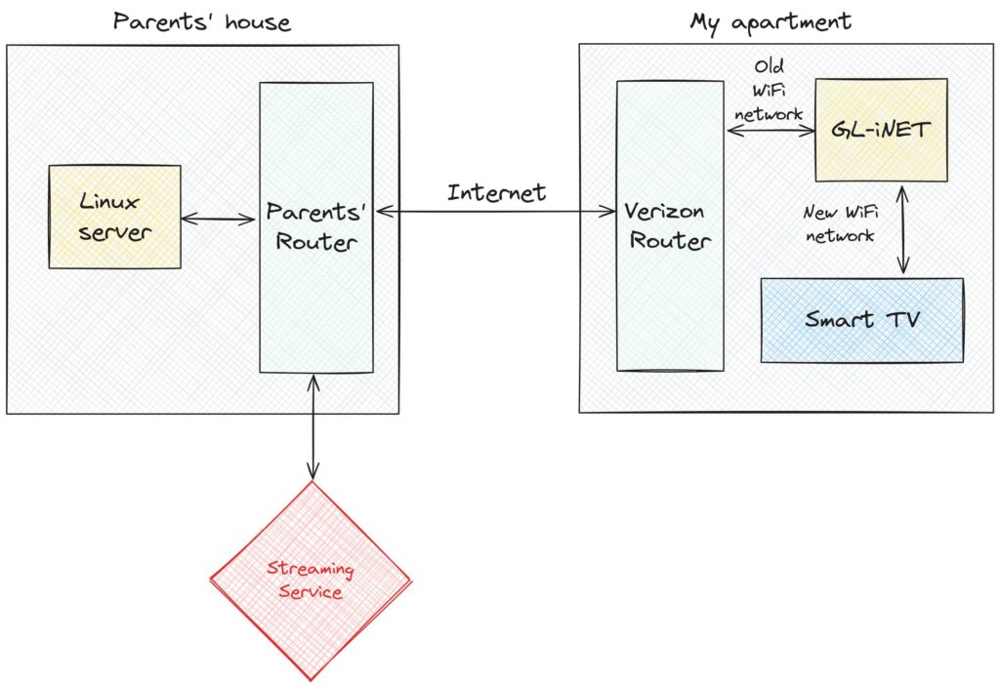
This might sound pretty straightforward, and I believed that it would be when I started this project. However, it turned out to be pretty frustrating, requiring hours of time debugging and googling before I was able to get everything right. There were a few things that made this difficult. Most importantly, I started with only a rudimentary understanding of how the Linux kernel routes network packets, and this resulted in a lot of initial confusion. Additionally, I hadn’t used OpenWrt before, so I was starting from square one when it came to working with configuration files on the GL.iNet. More generally, I chose to use a lot of tools that I’d never used before, and this created a pretty steep learning curve.
I’ll split this post up into a few parts, describing the different steps I passed through on the path to my final setup. Roughly, I’ll talk about these three things:
Setting up a VPN, in this case WireGuard, to connect my GL.iNet to the server at my parents’ house.
The initial configuration I tried on the GL.iNet to tunnel traffic, and the hacky solution that eventually worked.
How I cleaned up the routing table on the GL.iNet to isolate tunneling to a single “guest” WiFi network.
Setting up WireGuard
This is the part that I actually got mostly right on the first try. My goal was to create a VPN between the GL.iNet and the server at my parents’ house. I had heard good things about WireGuard, so I started by following this lovely DigitalOcean tutorial. After following this tutorial, I ended up with a WireGuard configuration on the server that looked like this:
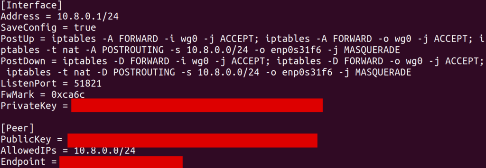
This configuration creates an interface (in my case, wg0) with a local IP address 10.8.0.1. The [Peer] section allows another WireGuard client (which will be the GL.iNet) to connect to this server and register itself with some other IP address 10.8.0.x (in my case, 10.8.0.2).
As far as I understand it, the iptables commands in PostUp setup NAT’ing, where 10.8.0.1 will act as a “router” of its own. In particular, this server is connected to my parents’ network over an Ethernet interface enp0s31f6. It has its own IP, something like 192.168.1.123, and can access the internet by sending packets over this interface with 192.168.1.123 as the source IP. What we’d like is for traffic from other clients on the WireGuard interface to be routed through enp0s31f6 so that they can access the internet through this same Ethernet connection. The MASQUERADE rule does this. In particular, when wg0 receives a packet from some other IP (e.g. 10.8.0.2) which is destined for some external IP (e.g. 8.8.8.8), some module in the kernel will know to rewrite the source IP in the packet to its own local IP (192.168.1.123) and send it over enp0s31f6. Furthermore, when it receives response packets on enp0s31f6 for this same logical connection (presumably identified by port and remote address), it will forward them back to 10.8.0.2 on wg0.
Unfortunately, the tutorial I was following did not describe how to setup WireGuard on an OpenWrt router. To achieve this, I basically mashed together several examples from internet forums to create the following client configuration on the GL.iNet:
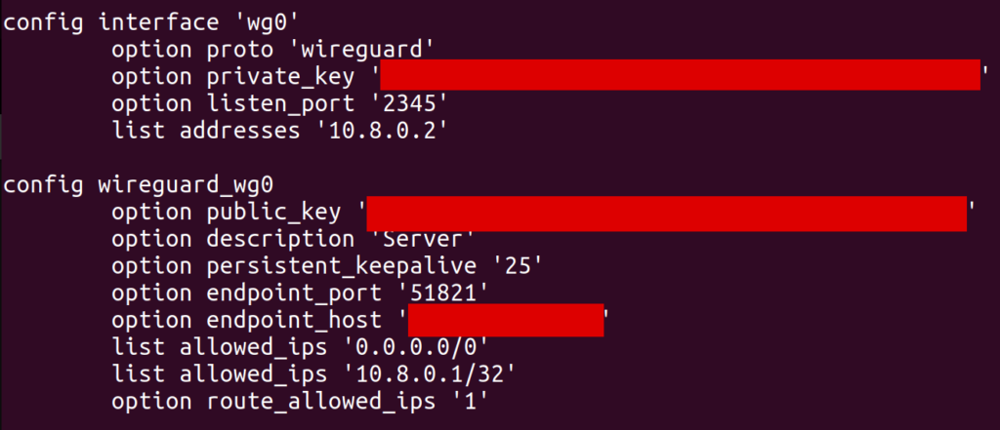
One important point, which took me a while to discover, is that allowed_ips has to include 0.0.0.0/0. Without this, I wasn’t able to send packets destined for arbitrary IP addresses over the wg0 interface (well, I could send them, but they’d silently get dropped). In retrospect, route_allowed_ips doesn’t really need to be enabled, since the default route it ended up creating didn’t work (which we’ll get to later). Also note that the endpoint_host is set to my parents’ remote IP, and I had to forward port 51821 on their router to my server.
With this configuration in place, I could run the wg command on the GL.iNet and find that the VPN was connected properly. I was also able to use the address 10.8.0.1 to ping and SSH into my server from the GL.iNet, indicating that things were mostly wired up correctly.
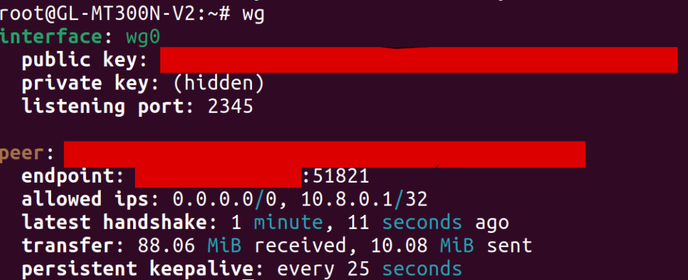
One hiccup I ran into was that, at first, I hadn’t added a [Peer] section to the WireGuard config on my server. As a result, the client was unable to connect to it, but the output of wg on the GL.iNet still looked basically the same (except that the latest handshake line was missing). As someone who hadn’t used WireGuard before, it was tough for me to tell that anything was wrong. In my opinion, WireGuard should make it more obvious when it hasn’t ever been able to reach a peer, since I wasn’t sure what to look for to see where things were broken.
Routing Traffic over WireGuard
After setting up WireGuard, I SSH’d into the GL.iNet and ran traceroute google.com to see if traffic was being routed through my parents’ home network. Surprisingly, traffic was still being routed directly over my apartments’ wireless network (the router of which was at 192.168.1.1), bypassing WireGuard altogether:
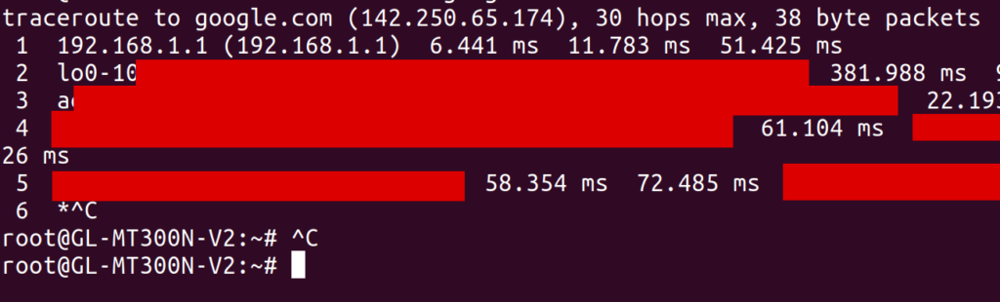
At the time, I had no idea why this would be the case. I understood a bit about routing tables, so I looked at the output of ip route show. I saw a default route over wg0 (presumably created by the WireGuard route_allowed_ips flag), and a second one via my apartment’s WiFi (via the apcli0 device).
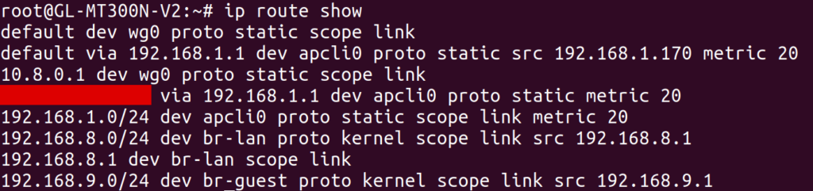
I tried deleting the latter default route, leaving only the route over wg0. To my dismay, I found that it made no difference: the output of traceroute was unchanged! While I later discovered what was actually going on, I’ll tell this story in chronological order by first describing a ridiculous workaround that I found to this problem.
I noticed that I could create specific routes to forward individual destination IP addresses through wg0, and these routes did seem to work. For example, I added a route for my personal website via the command
# route add -host 198.74.59.95 dev wg0
and then all traffic to 198.74.59.95 was correctly routed through WireGuard. I suspected that this had to do with the way the routing table prioritizes routes. In particular, more specific routes take higher precedence than general routes. The routes I was creating were about as specific as it gets, since they were scoped to single addresses, so of course they’d be the highest priority.
At this point, I was pretty sure that I could route all traffic over wg0 by creating a route for all 2^32 IPv4 addresses. However, I didn’t want to test how the Linux kernel would handle this kind of ridiculousness, so I instead created roughly 256 routes, each forwarding x.0.0.0/8 over wg0. I figured out how to do this via OpenWrt’s UCI configuration files, and dumped the output of the following Python script at the end of /etc/config/network:
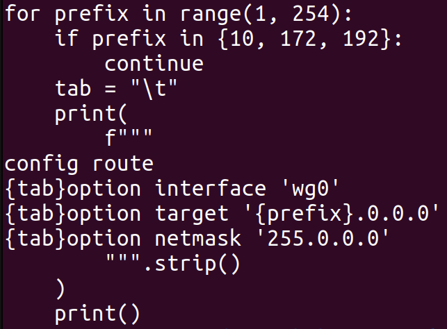
After setting up this configuration, I indeed saw traceroute doing the right thing when accessing external IP addresses:
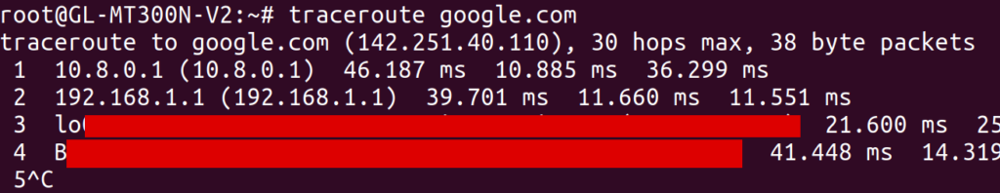
Note from this output that the traffic first hops to 10.8.0.1 and then to 192.168.1.1. You might be concerned that traffic is still going over my apartments’ router at 192.168.1.1, but worry not. Just to maximize confusion, my parents’ router also has the local IP address 192.168.1.1, and that’s the hop that we are seeing in this case.
Now that traffic on the GL.iNet was being routed over the VPN, I figured I’d try setting up an actual WiFi network. When I first configured the network on the GL.iNet, I connected to it from my laptop and found that traffic couldn’t get through to the internet at all. I ended up needing the following firewall configuration (in /etc/config/firewall) on the GL.iNet in order to pass traffic correctly from the “guest” WiFi network to the WireGuard interface:
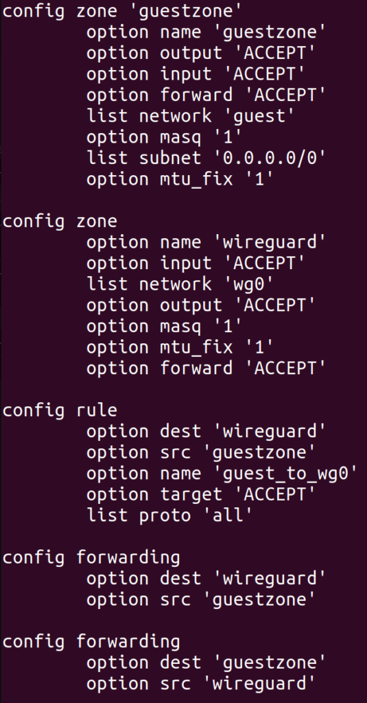
It took an embarrassingly long time to get this config right, and each time I changed it, I had to wait a minute or two for various services on the GL.iNet to restart. Most troubling of all was the mtu_fix flag, which took me about two hours to discover. Before I set that flag, I was already able to access most websites from the new WiFi network, and they were correctly tunneled through my parents’ home network. However, some websites did not load at all, and curl -v typically showed that the connection was stalling during the TLS handshake.
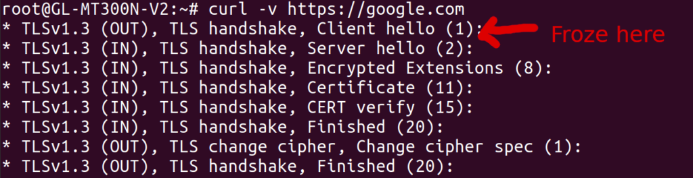
I found this thread after some googling, which suggested an MTU issue. The MTU is essentially the maximum size of a packet that can pass through a network device. For most common networks, this seems to default to 1500, but for the WireGuard interface on my GL.iNet, it was 1420 (as shown by ip addr):
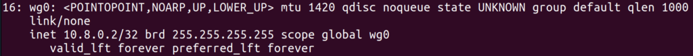
This isn’t a mistake, but rather a side effect of the fact that WireGuard wraps packets with some extra headers, which apparently take up 80 bytes. However, my laptop believed that the WiFi network had an MTU of 1500, as shown by ip addr:
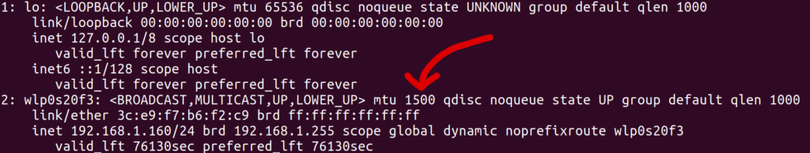
To test the hypothesis that mismatching MTUs were causing the stalled connections, I manually overrode the MTU of the wlp0s20f3 interface on my laptop to a smaller value, using the command
# sudo ip link set mtu 1300 wlp0s20f3
And presto, suddenly all websites loaded without any problems! Of course, I couldn’t manually override the MTU of network interfaces on my smart TV, so I needed another solution. After reading about path MTU discovery, I noticed a technique called MSS clamping, where a router in the network path modifies the “maximum segment size” field of TCP packets to fill in the minimum MTU of the devices it knows about. I was about to implement this by hand (perhaps with iptables or even eBPF) when I noticed the mtu_fix field in the OpenWrt firewall config documentation:
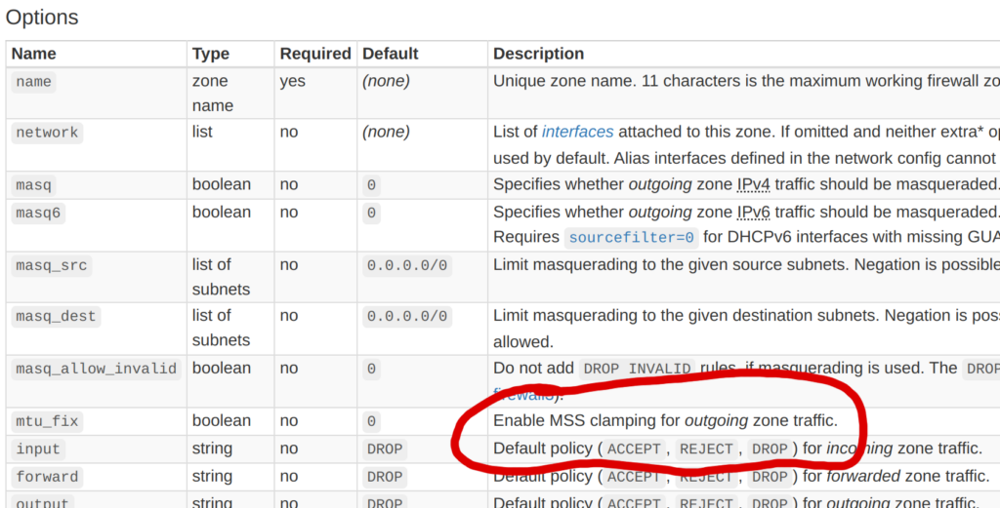
I enabled this option, and boom, connections worked even without manually overriding the MTU of my network interface! I still don’t know what will happen when using non-TCP protocols like QUIC, and I do slightly worry about that. In the future, I’d like to figure out a way to make my VPN support larger packets without constraining the MTU, even if it does mean creating more packet fragmentation.
Cleaning up the Routing Table
While my current solution did technically solve the problem I had set out to solve, it had two downsides that I wanted to address:
It was messy. I now had over 256 routing table entries, and it felt like this shouldn’t be necessary. Ideally, I should be able to use a single routing table entry to forward all traffic over wg0. It was currently a mystery why this did not work as expected.
The wg0 routes were applied globally. Ideally, these routes would only be applied to traffic coming from the special WiFi network itself. This might be a problem if, for example, I wanted to expose two WiFi networks from the GL.iNet: one which acts as a normal repeater, and another one that tunnels traffic through my parents’ house. With my current setup, this would be impossible.
To solve the first problem, I had to learn more about how Linux routes IP traffic. Up until now, I only knew about the “main” routing table, which can be shown and manipulated with the deprecated route command, or with the ip route command without a table argument. A routing table itself only uses the destination IP address of a packet to determine which device (and gateway) to send that packet to. This isn’t very flexible, since it doesn’t allow us to consider the source address or other attributes of the packet.
To create more complex routing rules, we can use the ip rule command to configure Linux’s routing policy database (RPDB). This lets us use various information about each packet to determine which routing table(s) to look at. To see all of the rules in the RPDB, we can use the ip rule command. Here was the output on the GL.iNet:
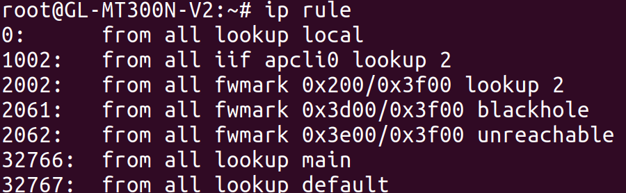
By default, there will only be three tables (local, main, and default) and one rule for each of them. In the output above, we see more rules, including this one:
from all fwmark 0x200/0x3f00 lookup 2
This rule points to table 2 (a different table than any of the built-in ones), and matches all traffic where fwmark & 0x3f00 == 0x200. Apparently, fwmark (the “firewall mark”) is an additional number associated with each packet that can be modified by firewall rules. I can’t claim to understand what sets this particular firewall mark on packets coming through this particular system, and I’d definitely like to understand more about this. Regardless, let’s take a look at table 2, since that’s where this rule points to:
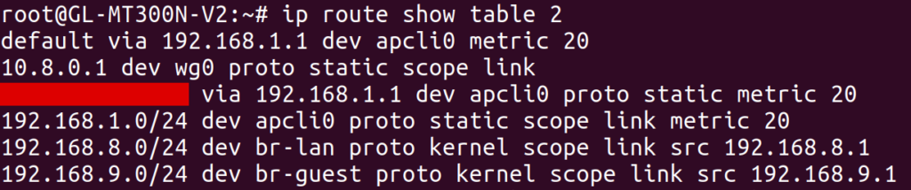
Aha! This routing table contains its own default route over apcli0 through 192.168.1.1 (my apartment’s router). This is a different default route than the one we saw earlier, which had been in the main table. Out of curiosity, I tried deleting all of my earlier custom routing rules, and additionally deleted the table 2 rule with:
# ip rule del fwmark 0x200/0x3f00 lookup 2
After deleting this rule, the default wg0 route from the main routing table took effect, automatically routing all traffic over the VPN! So this at least solved one mystery: I had only been looking at the main routing table, but there was a higher-priority rule that was directing traffic to a different default route than the one I was looking at. Granted, I still don’t know what created table 2 or the corresponding rules pointing to it, and some preliminary grep’ing of /etc didn’t yield anything particularly informative. I’d be curious to know if anybody else knows the answer.
Moving onto the second problem, I leveraged my newfound knowledge of policy routing to narrow the scope of the VPN route. In particular, I only wanted to route traffic over the VPN if it was coming from machines on a guest WiFi network. Since I configured my GL.iNet’s guest WiFi network to assign IP addresses in the range 192.168.9.128 through 192.168.9.254, all I needed to do was define a routing rule to route traffic from this range over the wg0 interface. I started by testing this idea with the ip command, and then created a UCI config for it in /etc/config/network:
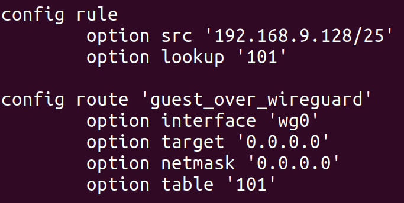
This configuration adds a route to table 101 (an arbitrary number I selected) with a single entry: a default route over wg0. The config rule section creates a rule to point all traffic coming from IPs on the guest WiFi network to this new table. After doing so, we can see the effects with the ip command:
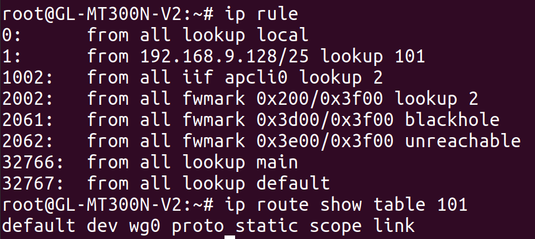
The end result is that traffic from the guest WiFi network is routed over wg0, but traffic from the GL.iNet itself, or from other WiFi networks exposed by the GL.iNet, is not. I actually tested this by exposing a second WiFi network from the GL.iNet and verifying that its traffic was not routed through the VPN. This was more of a victory lap than anything else, to verify that I actually understood what was going on.
Conclusion
After going through this saga, I decided that it was time to set this project down for a while. I had a working setup, and ended up learning a lot more than I intended.
However, I was left with a few unanswered questions at the end of the process:
Is there a better alternative to MSS clamping? And what happens for other protocols like QUIC? And perhaps more importantly, why isn’t standard MTU path discovery working in the first place?
What created the routing table 2 in the first place, and those two rules pointing to it? And what is setting the 0x200 fwmark that triggers the routing rule in the first place?
Why is the network so slow? At the moment, it’s only able to achieve 5-10 Mb/s, which is much slower than my personal network or my parents’ network. I think this may be a limitation of the GL.iNet itself, since the speed isn’t much better even without tunneling through the VPN.
Even though I reached my goal, there’s more work that I could have done. At the moment, I don’t do anything to tunnel DNS traffic, so my apartment’s ISP still happens to determine the DNS server that my TV uses. I don’t think streaming services will notice this, but it could be worth fixing even if just for privacy reasons while traveling with my GL.iNet in the future.
I spent about $30 on the GL.iNet, which is enough to purchase a few months of any reasonably-priced streaming service. While it was probably not worth the effort from a monetary standpoint, I still think it was worth it 100 times over when factoring in the learning I got to do along the way.
I’ll leave you with the observation that this project didn’t require writing any real code! It’s unusual for me to spend so much time working on something that really boils down to writing the right config files. Perhaps that’s a testament to how powerful the Linux kernel (and other existing software) is when it comes to networking. Or, perhaps, it’s a sign that what I did wasn’t really that interesting or impressive at all.